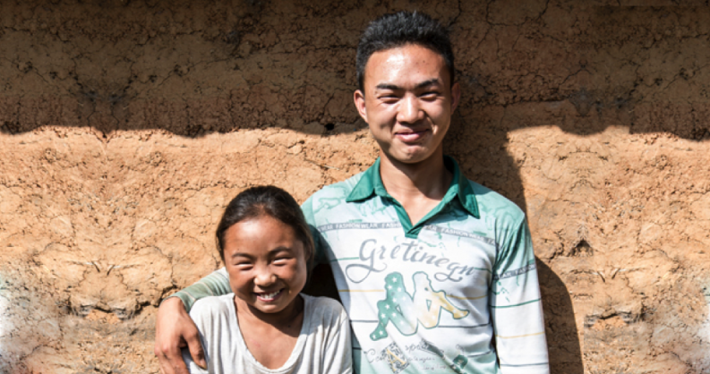

捡回珍珠计划
“捡回珍珠计划”是为帮助义务教育阶段中国经济欠发达地区，家境相对困难、品学兼优的学生能享受到公平而有质量的教育机会，浙江省新华爱心教育基金会(以下简称“新华爱基会”)于2007年正式发起的公益助学项目。
“自然之友”2019年起加入该助学计划，联合“新华爱基会”一起帮助珍珠生，每回收旧衣物1KG支持0.1元。

捡回珍珠计划”公益项目合作模式为：“新华爱基会”积极响应教育脱贫攻坚“十三五”规划，聚焦国家级贫困县，深入挖掘“捡珍珠”，覆盖率达3/4（包括学校所在地为国家级贫困县或学校招生范围覆盖国家级贫困县），在学校设立40-50名“珍珠生”组成的“珍珠班”，合作学校免除“珍珠生”在校三年的学费和住宿费，新华爱基会透过爱心人士的善款，每年给予每位“珍珠生”2500元生活补助款，三年共计7500元。
资助标准：
250元=给予一个珍珠生一个月生活补贴；
2500元=让一个珍珠生一整年安心学习；
7500元=使一个珍珠生完成3年高中学业走出大山；
375000元=让50个孩子一起进入大学（可命名珍珠班）！
如果您想资助珍珠生，可以通过“自然之友”支持和帮助；
如果您个人或企业想直接捐助支持，请联系“河南省新华爱心教育基金会”工作人员，
联系方式17681552125。跟“自然之友”一起支持“捡回珍珠计划”！
对于我们而言,他们都是都是遗落的珍珠